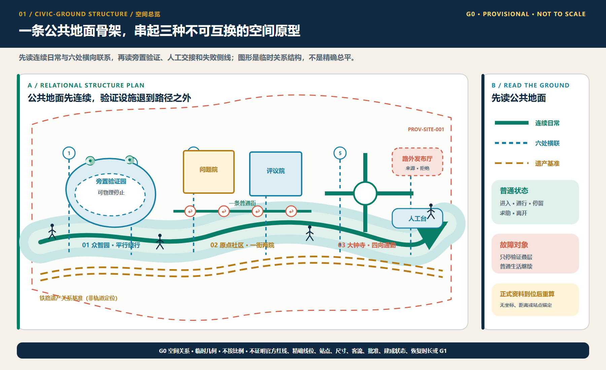
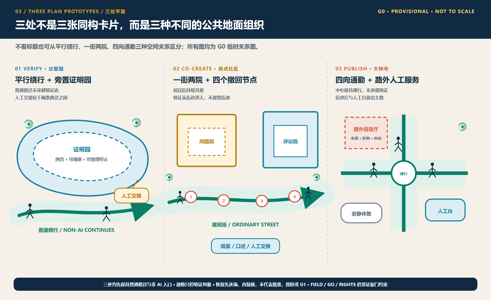
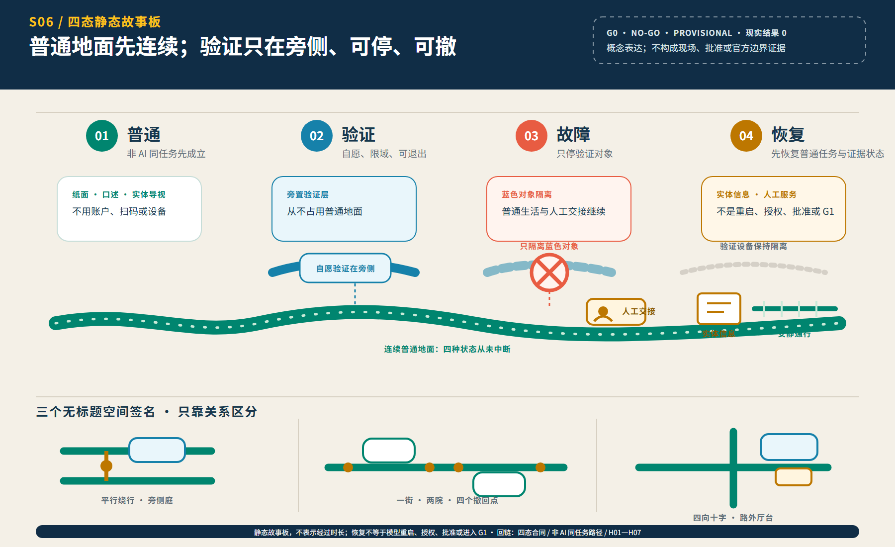
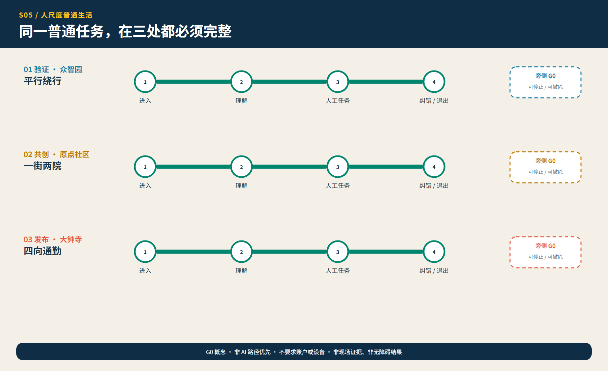
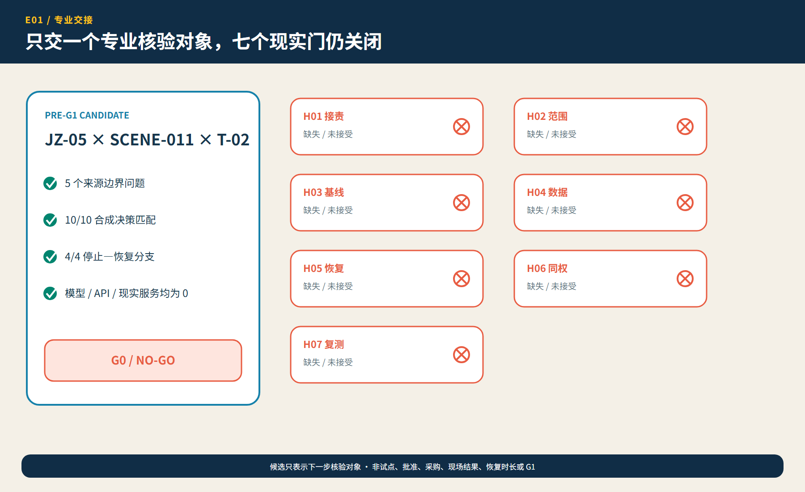

01
30 秒：先看空间裁决

02
三处不看标题也不能互换

03
3 分钟：普通—验证—故障—恢复

概念动态图解，可选播放。54 秒仅为编辑播放节奏，不是现实恢复时长；不播放、视频无法解码、打印或设置减少动态时，紧随其后的静态故事板仍提供同等完整答案。
04
同一公共权利，不复制同一空间答案

05
只交一个 pre-G1 核验候选，仍是 NO-GO

06
15 分钟：追到证据、权利与专业否决
geometry 与 metrics 保持冻结。唯一候选已备齐 H01—H07 七项关闭条件与 D01—D08 八条材料记录，但真实附件、接受、批准、现场结果和独立复测仍为 0；10/10 合成回放不是服务准确率。
临时场地模型11.41 km²
绿地比例12.62%
公共空间比例1.28%
任务覆盖
- 总览地图
- 三层范围
- 重点区域
- 用地分区
- 交通慢行
- 蓝绿公共空间
- 建筑
- 更新项目
- AI 场景
- 核心指标
- 任务覆盖
- 自检状态
- 假设